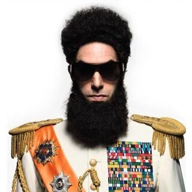

Hi, I'm Admiral General Aladeen,
I was born to Omar Aladeen and a French Stewardess, who died in childbirth, 1973.
Being the only son of Omar Aladeen, I was the sole successor to my father's position.
I grew up and went to study in Switzerland and continued onto university, attending the University of Aladeen, and the North West Aladeen University.
I earned a total of 118 PhD's and 30 post-docs.
Aladeen gave an inspiring speech regarding Western treachery as soon as he was born. - Wadiyan Sources